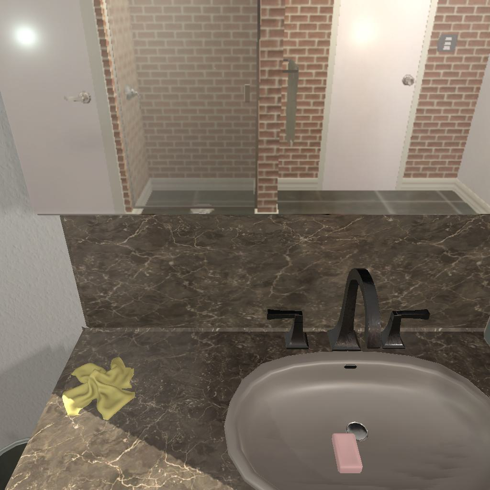

---------------------------------------------------------task: 27---------------------------------------------------------
--------------------------------------------------------------------------------------------------------------------------------------------------------------------
--------------------------------------------------------------------------------------------------------------------------------------------------------------------
Step:--------------------------------------------------------------------------5-------------------------------------------------------------------------------
----------------------------------------
VLM Prompt:
Image1:
Image2:
**Instruction**
1. Analyze the provided images to identify all visible household objects and compare the difference between images (e.h. whether the object is opened or not and taken on hand or not), focusing on those relevant to the task description "find two soapbottle and put them in garbagecan."
2. Use the analysis of images and the task hint "The agent must find an object of the desired type, pick it up, find the correct location to place it, put it down there, then look for another object of the desired type, pick it up, return to previous location, and put it down there with the other object." to answer the question: what is the most reasonable action in the choices for the task description "find two soapbottle and put them in garbagecan"?
3. Decide and write the answer using the template: The answer is: (i): , where i is the real number. If there is no desired object in images, search every place based on **Initial Observation** to find the object. And if no one is exactly correct, choose a similar answer.
**Initial Observation**
You are in the middle of a room. Looking quickly around you, you can see countertop (1), sinkbasin (1-2), sink (1-2), garbagecan (1), drawer (1-2), toilet (1), handtowelholder (1)
**Answer Choices**
(1): go to sinkbasin 1
(2): go to sink 1
(3): go to garbagecan 1
(4): go to drawer 2
(5): go to sink 2
(6): go to sinkbasin 2
(7): go to toilet 1
(8): go to handtowelholder 1
(9): open drawer 1
(10): close drawer 1
(11): examine drawer 1
**Answer**
Let's think step by step by following the instructions.
----------------------------------------
----------------------------------------
Original Response:
First, by analyzing the images, we can identify the following objects:
- In Image 1, there is a sink with a faucet, a soap bottle on the countertop, and a yellow cleaning cloth.
- In Image 2, there are two sinks with faucets, two soap bottles on the countertop between the sinks, and a yellow cleaning cloth.
Comparing the images, we can see that in Image 2, there is an additional sink and an additional soap bottle compared to Image 1.
Now, referring to the task description "find two soap bottles and put them in the garbage can," we need to locate two soap bottles and then proceed to place them in the garbage can. Based on the initial observation, we know there is a garbage can in the room.
Using the task hint, the most reasonable action would be to first go to the location where the soap bottles are located, pick them up, and then go to the garbage can to dispose of them.
Since the images show two soap bottles on the countertop between the sinks in Image 2, and we need to perform the task of disposing of them, the most reasonable action would be:
The answer is: (6): go to sinkbasin 2
This action will bring the agent closer to the two soap bottles, allowing them to pick them up and proceed with the task.
----------------------------------------
----------------------------------------
>>> Refine Original VLM Response and Get Pure Action: go to sinkbasin 2
This action will bring the agent closer to the two soap bottles, allowing them to pick them up and proceed with the task
----------------------------------------
-----------------------------------------------------------------
Running time: 14.760779619216919 seconds
Total Money: 13.945389999999998
-----------------------------------------------------------------
-----------------------------------------------------------------
Text Observation:Nothing happens.
-----------------------------------------------------------------
UNSUCCEED